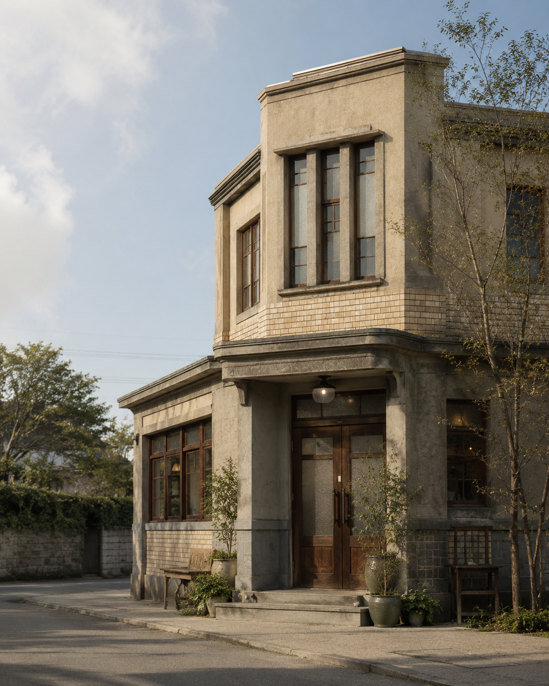
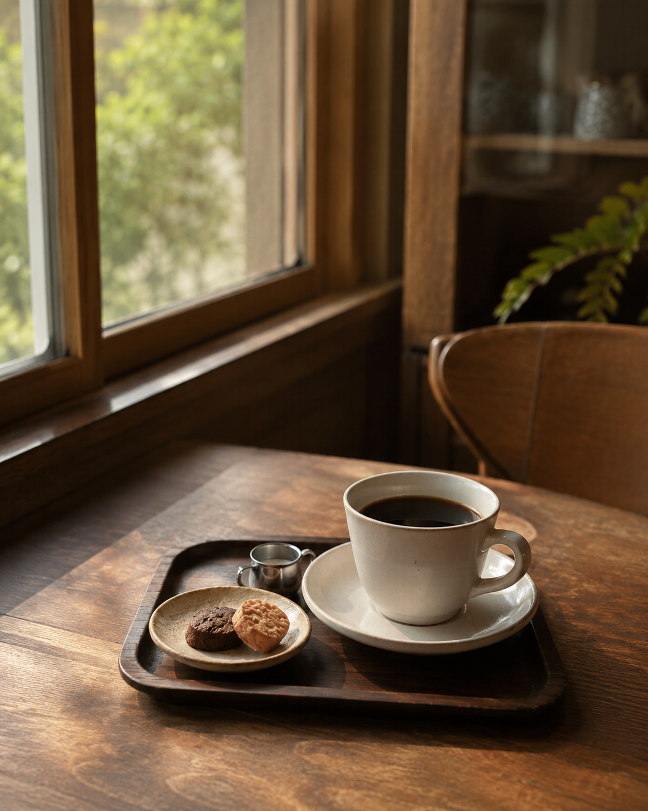
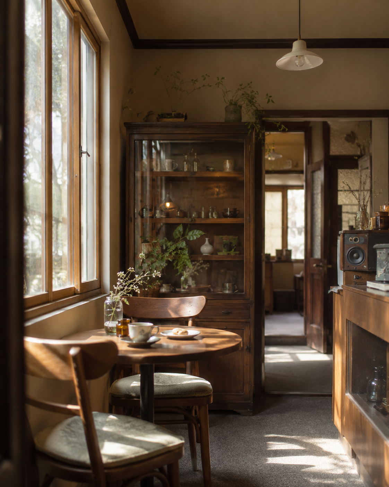

MATSUMOTO ・ 旧青木医院
松本城の総堀前にある、旧青木医院を活かしたカフェ。古い建物の趣を感じながら、コーヒーと音楽に包まれて、穏やかなひとときを過ごせます。
REASON
派手さではなく、建物の趣、静かな空気、コーヒーをゆっくり楽しめる時間が魅力のカフェです。
かつての医院の雰囲気を活かした店内で、ほかのカフェとは少し違う時間を過ごせます。
松本城の総堀前にあり、散策や観光の途中の休憩にも向いています。
大きなお店ではなく、落ち着いてコーヒーを飲みたい方に合う小さな空間です。
COFFEE
コーヒーを中心に、静かな店内でゆっくり過ごせるカフェです。

最新のメニューや価格は、来店前にInstagramまたはお電話での確認をおすすめします。このページではコーヒーを中心とした喫茶利用としてご紹介しています。
FIRST VISIT
旧医院の建物を活かしているため、初めて訪れる方は入口や店内への進み方に少し迷う場合があります。静かに過ごしたい方、松本城周辺で落ち着いて休憩したい方に向いています。
ATMOSPHERE
木の家具、古い建物の質感、窓から入る自然光。にぎやかに過ごすよりも、コーヒーを飲みながら静かに休みたい方に合う雰囲気です。BGMや音響も、店内で過ごす時間の一部として楽しめます。

INFORMATION
観光や散策の合間に、旧医院の面影を残す空間でコーヒーを楽しみませんか。最新の営業情報はInstagramまたはお電話でご確認ください。
Instagramを見る